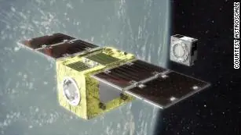
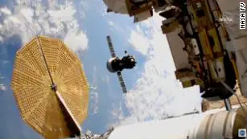

Science news ·
Why China’s space program could overtake NASA
(CNN)China has a good chance of becoming the dominant space power in the 21st century, and it’s not just looking to copy NASA on the way to the top. Instead, the country is paying close attention to what innovative US companies like SpaceX are doing as well. To get ahead in space, communism is learning from capitalism.
Eric Berger In the summer of 2019, a small Chinese rocket launched from an inland spaceport in the southern part of the country. Close-up photos, posted afterward on Chinese social media accounts, showed small grid fins affixed to the upper part of this Long March 2C rocket for the first time. They were virtually identical in design to the grid fins SpaceX uses to steer its Falcon 9 rocket through the atmosphere for landings on its ocean-based drone ships. A year after this test, China’s main space contractor revealed plans to develop the ability to reuse its Long March 8 booster, which is powered by kerosene fuel, the same type of power that fuels SpaceX rockets. By 2025, Chinese officials said, this rocket would be capable of landing on a sea platform like SpaceX’s Falcon 9 booster.And it is not just the Chinese government contractors that are emulating SpaceX. A growing number of semi-private Chinese companies have also announced plans to develop reusable rockets. Chinese firms such as LinkSpace and Galactic Energy have released schematics that seem to mimic SpaceX technology.None of this should be particularly surprising. Government-launched enterprises in both Russia and Europe also recently revealed plans to develop reusable rockets that are similar both in appearance and function to the Falcon 9 booster. But what makes the Chinese efforts to emulate SpaceX particularly notable is the country’s expansive ambitions in space and its vast resources to back up these long-term goals.Earlier this month, the Chinese government signed an agreement with Russia to work together to build a Moon base. China has also begun planning to launch crewed missions to Mars and deploy a massive space-based, commercial-scale solar power plant by 2050. They’re playing the long game, and they’re playing to win.

Mission to clean up space junk with magnets set for launch Based on China’s recent accomplishments in space, it would be wise to take these grand ambitions seriously. In December, China became only the third nation to return Moon rocks to Earth. Later this spring, it will seek to join the United States as only the second country to land and operate a rover on the surface of Mars.All the while, China is racing across a number of other fronts in space, from building an orbital space station to maturing anti-satellite capabilities in space to establishing a base on the moon.As China advances in space, NASA has spent more than $20 billion building a large rocket, the Space Launch System, that could soon be obsolete. And flying this single-use rocket is so expensive that, in combination with its Artemis program, NASA could exceed its congressional funds by more than 43%.NASA could also abandon the International Space Station in a few years. Meanwhile, China is training European astronauts and teaching them Chinese so that they might visit its large, modular space station. Some of these European astronauts may subsequently join the China-Russia lunar exploration effort.Increasingly, the US’ main advantage over China lies in its burgeoning commercial space industry, led by SpaceX. If America wants to compete, it should unleash the full potential of SpaceX and other commercial space companies that seek to go further in space, faster and for less money. This kind of public-private partnership has already worked in low-Earth orbit, with NASA buying services from companies such as SpaceX, Northrop Grumman and Boeing to deliver cargo and astronauts to the International Space Station.This is one reason why, about five years ago, China began backing dozens of companies to commercialize rockets and satellites. The 21st century space race, therefore, is not so much between China and NASA. Rather, it is between China and the US commercial space industry.

Astronauts relocated a spacecraft outside the International Space Station Nearly a decade ago, SpaceX attracted international acclaim when it began to successfully land its Falcon 9 rockets, accomplishing an engineering feat many previously deemed impossible or impractical. While historically rocket boosters have been discarded in the ocean after they expend their fuel on the way to orbit, SpaceX figured out how to land its boosters upright on platforms at sea and on land, allowing the company to recover and refurbish the rockets and save money.Later, the company strapped three of these Falcon 9 cores together to build a larger and much more powerful rocket, called the Falcon Heavy. And it is now testing an even larger, reusable booster, its Starship vehicle, intended to ferry humans to and from Mars.In late February, China unveiled strikingly similar space plans. The country’s space agency said it would build a triple core rocket, which looks like a SpaceX Falcon Heavy. And it also confirmed plans to move forward with its titanic Long March 9 rocket, capable of lifting as much as 140 metric tons to low-Earth orbit, the same amount as the Saturn V rocket, an American super heavy-lift launch vehicle that remains the most powerful rocket that has ever flown successfully. This massive rocket would be unlike anything NASA built, however; Chinese officials, taking a page from the SpaceX playbook, said they would like it to be reusable. And, they added, they aim to one day launch the Long March 9 to take its taikonauts to Mars.While SpaceX became a transformational space company, the US and China have been locked in an increasingly intense battle for influence and economic resources on Earth. That conflict, which has already emerged in low-Earth orbit, will extend to the Moon and eventually Mars in the coming decades. In the contest for geopolitical influence and economic wealth, space will come to represent the ultimate high ground.